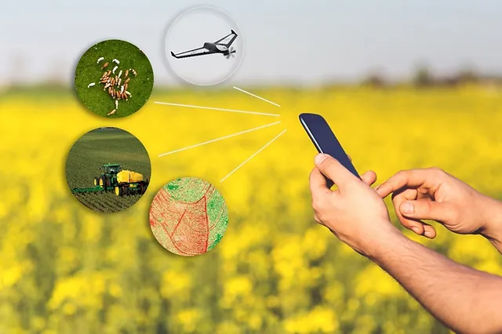

A tecnologia está transformando o campo e revolucionando a agricultura de maneiras surpreendentes. Com o avanço de ferramentas como drones, sensores IoT e inteligência artificial, os agricultores agora podem monitorar suas culturas com uma precisão sem precedentes. Essas inovações permitem o uso mais eficiente de recursos, como água e fertilizantes, e melhoram a produtividade e a sustentabilidade das operações agrícolas. Além disso, a análise de dados em tempo real possibilita uma tomada de decisão mais informada, contribuindo para um futuro mais produtivo e sustentável para o agronegócio. A integração dessas tecnologias não apenas otimiza o trabalho no campo, mas também abre novas possibilidades para enfrentar os desafios da agricultura moderna.
A automação e a robótica também estão mudando a face da agricultura. Máquinas agrícolas automatizadas, como tratores e colheitadeiras, estão otimizando as operações e reduzindo a necessidade de trabalho manual intensivo. Robôs especializados são agora capazes de realizar tarefas complexas, como plantio e controle de ervas daninhas, com precisão e eficiência. A biotecnologia tem contribuído para o desenvolvimento de cultivares mais resistentes e produtivas. Variedades geneticamente modificadas podem resistir melhor a doenças e pragas, além de se adaptar a condições climáticas adversas, o que é crucial diante das mudanças climáticas globais. Outras abordagens inovadoras incluem o cultivo vertical e a hidroponia, que permitem a produção de alimentos em ambientes controlados e muitas vezes urbanos, utilizando menos água e espaço em comparação com a agricultura tradicional. Essas técnicas são particularmente promissoras para atender à crescente demanda por alimentos em áreas densamente povoadas. Por fim, a integração de energias renováveis nas operações agrícolas, como painéis solares e turbinas eólicas, está ajudando a reduzir a dependência de fontes de energia não renováveis e a minimizar os custos operacionais, contribuindo para uma agricultura mais verde e sustentável. Essas mudanças tecnológicas estão moldando um futuro mais eficiente e sustentável para a agricultura. Ao adotar essas inovações, o setor está não apenas aumentando a produtividade, mas também enfrentando desafios críticos como a escassez de recursos e as mudanças climáticas, garantindo um suprimento alimentar mais seguro e sustentável para as gerações futuras.